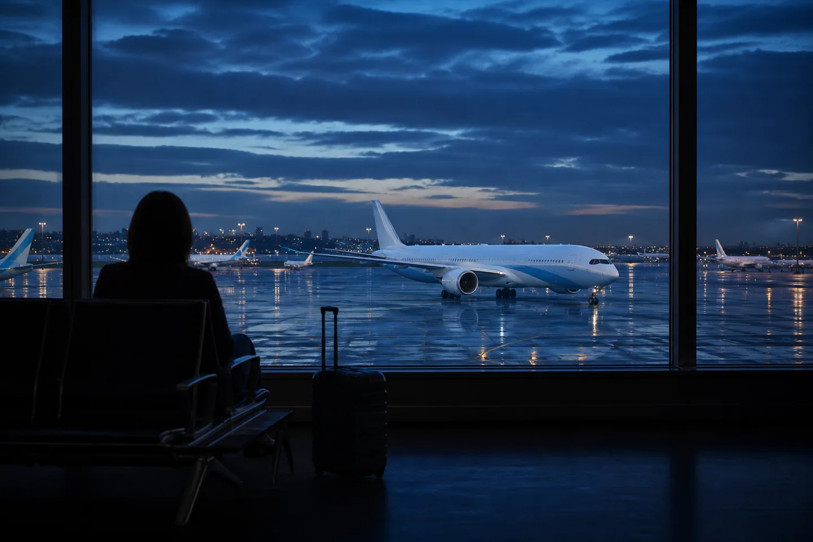

EDITORIAL VISUAL · NOT AN ACTUAL AIRLINE PHOTOGRAPH
01 THE BIG PICTURE
합병은 하루지만, 통합은 긴 비행이다.
대한항공과 아시아나항공의 결합은 단순히 항공기 두 무리를 한 이름 아래 놓는 일이 아니다. 예약·발권, 운항통제, 정비, 안전 매뉴얼, 승무원 교육, 공항 동선, 라운지, 마일리지, 기업문화까지—승객에게 보이지 않는 수천 개의 규칙을 하나로 다시 쓰는 일이다.
2024년 12월 대한항공이 아시아나항공 지분 63.88%를 취득하며 두 회사는 모회사와 자회사가 됐다. 2026년 5월 양사는 합병 계약을 승인했고, 6월 국토교통부의 조건부 인가와 8월 아시아나항공 임시 주주총회 가결을 거쳤다. 예정대로라면 12월 17일, 아시아나항공의 법인과 브랜드는 대한항공에 흡수된다.
그러나 달력의 한 날짜가 모든 변화를 동시에 의미하지는 않는다. 도장은 먼저 찍히고, 항공기 도색은 수년에 걸쳐 바뀐다. 동맹은 하루아침에 달라지지만, 마일리지는 10년의 경과 기간을 둔다. 이 웹진은 그 서로 다른 속도를 한 장의 지도 위에 놓는다.
합병 출범 예정12.17
2026년
지분 인수63.88%
2024년 12월
합병 비율1 : 0.2736432
대한항공 : 아시아나
예상 통합비용~1조원
회사 설명 기준
02 SIX YEARS IN MOTION
6년, 열네 개 관할권, 하나의 결론.
‘인수 발표’와 ‘통합 항공사 출범’ 사이에는 세계 각국 경쟁당국의 조건, 화물사업 매각, 대체 항공사의 노선 진입, 안전운항체계 변경이 차곡차곡 놓였다.
5월 합병 계약 승인, 6월 국토부 조건부 인가, 8월 아시아나 주총 가결로 법적 절차가 종착점에 가까워졌다.
통합 대한항공 출범 예정
아시아나는 전날 23시 59분 스타얼라이언스를 떠나고, 이튿날 대한항공 중심의 단일 회사·스카이팀 체계로 이동할 예정이다.
03 IDENTITY, REWRITTEN
ONE
같은 로고를 다는 것보다 같은 약속을 지키는 일.
VISUAL
41년 만의 새 얼굴
대한항공은 2025년 태극 모티프를 단순화하고 짙은 남색 워드마크와 금속감 있는 하늘색 동체를 공개했다. 새 정체성은 통합 항공사의 얼굴이지만, 전체 기재 도색은 수년이 걸리는 점진적 과정이다.
SERVICE
브랜드는 접점의 총합
새 메뉴, 프리미엄 이코노미, 인천 T2 라운지 확장, 체크인 동선 개편은 로고보다 먼저 고객이 체감하는 변화다. 통합 브랜드의 성패는 예약 화면부터 수하물 도착까지 경험의 편차를 얼마나 줄이는가에 달렸다.
MEMORY
아시아나라는 이름 이후
1988년 출범한 아시아나는 ‘색동날개’와 서비스 언어, 스타얼라이언스 네트워크로 한 세대의 여행 기억을 만들었다. 브랜드 소멸은 자산의 삭제가 아니라 무엇을 보존해 새 표준으로 옮길지 묻는 아카이브 작업이어야 한다.
04 NETWORK & FLEET
더 큰 네트워크, 더 적은 중복.
노선
2026년 봄부터 양사는 파리·시드니·바르셀로나 등 일부 국내외 노선에서 공동운항을 시작했다. 통합 후에는 중복 시간대를 재배치하고 연결편을 촘촘히 만들 여지가 커진다. 동시에 경쟁당국이 지정한 노선에는 대체 항공사가 들어와 운임과 선택지를 감시하는 안전판 역할을 한다.
기재
서로 다른 제작사·세부 형식·객실 배열을 가진 대형 기단을 한 번에 표준화할 수는 없다. 100대가 넘는 차세대 보잉 기재 주문은 장기 교체 계획의 방향을 보여주지만, 실제 통합 초기에는 좌석 번호와 서비스 절차처럼 승객 접점의 규격부터 맞춰진다.
LCC
진에어·에어부산·에어서울은 별도의 ‘통합 진에어’로 재편될 예정이다. 현재 목표는 2027년 1분기다. 규모의 경제와 지역공항 네트워크를 얻는 대신, 부산 기반성·브랜드 다양성·시장 경쟁을 어떻게 지킬지가 다음 질문이다.
05 WHAT CHANGES FOR YOU
내 마일리지는 어디로 가나.
아래 내용은 2025년 9월 공개된 통합안과 2026년 6월 제휴 종료 공지를 바탕으로 한 요약이다. 마일리지 통합안은 공정거래위원회 최종 심사 결과에 따라 달라질 수 있으므로 실제 전환 전 공식 안내를 다시 확인해야 한다.
탑승 적립
100아시아나
→
100스카이패스
1 : 1제휴 적립
100아시아나
→
82스카이패스
1 : 0.82
01
10년간 별도 보유
기존 아시아나 마일리지는 통합 후 10년간 ‘구 아시아나 마일리지’로 별도 관리하는 안이 제시됐다. 원래 유효기간은 그대로 적용된다.
02
전환은 전액 단위
10년 안에 원하는 시점에 스카이패스로 바꿀 수 있지만, 전환 신청 시 남은 구 아시아나 마일리지 전액을 전환하는 방식이다.
03
등급 자동 매칭
아시아나 우수회원 등급은 유사한 스카이패스 등급으로 자동 매칭되고, 양쪽 등급을 모두 보유하면 더 높은 쪽을 적용하는 안이다.
04
동맹의 시계
스타얼라이언스 적립·사용·우수회원 혜택은 2026년 12월 16일까지. 통합일부터는 매칭된 등급에 따라 스카이팀 혜택으로 옮겨갈 예정이다.
05
공항은 이미 T2
아시아나항공 인천 출도착 전편은 2026년 1월 14일부터 제2여객터미널을 이용한다. 공동운항편은 실제 운항사를 반드시 확인해야 한다.
06
예약은 운항사 기준
합병 전후 여행이라면 편명보다 실제 운항사, 터미널, 좌석, 수하물, 라운지 조건을 출발 직전 확인하는 편이 안전하다.
TRAVEL CHECK
12월 전후 일정이 있다면 ① 두 프로그램 회원번호·잔액 캡처 ② 스타얼라이언스 보너스 여정 확인 ③ 실제 운항사와 터미널 재확인 ④ 공식 이메일 수신 동의 점검을 권한다.
06 PEOPLE BEHIND THE MERGER
“운항증명은 하나로 바꿀 수 있다. 신뢰는 함께 일한 시간으로만 쌓인다.”
두 회사는 공동 비상탈출 훈련, 공유 사무공간, 사회공헌, 가족 초청 행사 등 접점을 늘리고 있다. 2025년 말 내부 설문에서는 응답 직원의 57.4%가 통합을 긍정적으로 봤다는 보도도 나왔다. 다만 직급·보상·근무표·승진·서비스 문화의 차이는 숫자로만 정리되지 않는다. 고객이 만나는 ‘하나의 항공사’는 결국 직원이 체감하는 공정성 위에서 만들어진다.
AI-GENERATED EDITORIAL VISUAL · PEOPLE ARE NOT ACTUAL EMPLOYEES
07 BEFORE THE NAME DISAPPEARS
1988—2026
아시아나라는 이름이 사라지기 전에.
한 브랜드의 마지막은 로고가 내려가는 순간이 아니라, 사람들이 더 이상 그 이름으로 여행을 예약하지 않는 순간에 온다. 서울항공에서 시작해 아시아나가 된 38년 동안, 색동날개는 가족의 첫 해외여행과 유학길, 출장과 귀향, 환승의 밤을 함께했다.
통합은 필연적으로 효율을 향하지만 기억은 효율만으로 정리되지 않는다. 오래된 안전방송의 억양, 승무원 스카프의 색, 기내식 트레이, 종이 탑승권, 동맹 라운지의 표지판 같은 사소한 물건이 한 시대의 여행 감각을 보존한다. 새 항공사가 지켜야 할 것은 브랜드명이 아니라 그 이름 아래 축적된 신뢰의 방식일 것이다.
이 섹션은 실제 직원 인터뷰나 회사 공식 입장이 아닌 독립 에디토리얼 에세이다.

CUSTOMER VIEW
선택지는 넓어질까, 가격은 달라질까.
연결편과 스케줄은 좋아질 수 있다. 반대로 직접 경쟁자가 사라진 노선에서는 운임과 서비스에 대한 감시가 더 중요해진다.
AI-GENERATED EDITORIAL VISUAL · NOT A DOCUMENTARY PHOTOGRAPH
08 THE GUARDRAILS
승인의 다른 이름, 조건.
대형 항공사 통합은 연결성과 규모를 키우지만, 경쟁자가 사라지는 위험도 만든다. 그래서 각국 승인은 ‘예’ 한 글자가 아니라 노선별 의무의 묶음이었다.
EU
유럽 4개 노선 + 화물
파리·프랑크푸르트·로마·바르셀로나 노선에 대체 사업자가 진입하도록 자산을 제공하고, 아시아나 화물기사업을 적격 인수자에게 매각하는 조건이 붙었다.
UK
런던–서울 슬롯
버진 애틀랜틱의 런던–서울 진입을 위한 히스로 슬롯 제공 약정이 수용됐다. 영국 CMA는 2026년 3월 구체적인 슬롯 합의를 승인했다.
JAPAN
일본 노선 경쟁
일부 한일 여객 노선의 슬롯 이전과 화물 경쟁 보완 조치를 전제로 거래를 승인했다. 화물사업 매각 종결은 이 조건의 핵심 이행이었다.
KOREA
34개 중복 노선 감시
슬롯·운수권 이전과 일정 기간 운임·공급·서비스 품질을 관리하는 조치가 부과됐다. 2026년에는 시애틀·호놀룰루·자카르타·제주 등 대체 항공사 선정이 이어졌다.
규제 조건은 집행·변경될 수 있다. 구체적 여행 판단에는 각 경쟁당국과 항공사의 최신 공지를 우선한다.
09 ORIGINAL REPORTING, ONE CLICK AWAY
기사 아카이브 40개의 시선.
승무원 현장 기사 10개를 포함해 공식 뉴스룸, 정부·경쟁당국, 통신사, 경제지, 항공 전문매체의 원문을 모았다. 카드를 누르면 새 탭에서 해당 원문으로 바로 이동한다.
10 QUICK ANSWERS
아직 남은 질문들.
아시아나항공은 정확히 언제 사라지나요?
현재 공식 일정은 2026년 12월 17일 통합 대한항공 출범입니다. 아시아나항공은 12월 16일 23시 59분 스타얼라이언스에서 탈퇴할 예정입니다. 다만 항공기 도색과 일부 시스템 전환은 이후에도 단계적으로 이어질 수 있습니다.
이미 발권한 아시아나 항공권은 어떻게 되나요?
운항 자체가 즉시 사라진다는 뜻은 아닙니다. 합병 전후 일정은 편명·실제 운항사·좌석·터미널이 조정될 수 있으므로 예약 조회와 항공사 안내 메일을 확인하세요. 특히 제휴 보너스 항공권은 동맹 전환에 따른 별도 제한이 있을 수 있습니다.
아시아나 마일리지는 자동으로 없어지나요?
공개안 기준으로는 아니다. 구 아시아나 마일리지를 통합 후 10년간 별도 운영하고, 기간 종료 시 남은 마일리지를 스카이패스로 자동 전환한다. 원래 유효기간은 유지되며 최종안은 공정위 승인 후 확정된다.
스타얼라이언스 혜택은 언제까지인가요?
아시아나 공식 공지 기준, 스타얼라이언스 적립·사용과 엘리트 혜택은 2026년 12월 16일까지다. 일부 누락 마일 사후 적립이나 보너스 항공권의 마감일은 더 이르므로 공식 표를 확인해야 한다.
항공권 가격은 오를까요?
단정할 수 없다. 통합은 연결성과 효율을 높일 수 있지만 중복 노선의 직접 경쟁은 줄어든다. 한국과 해외 경쟁당국이 슬롯·운수권 이전, 대체 항공사 진입, 운임과 서비스 감시 조건을 둔 이유다.
이 사이트는 대한항공 공식 웹사이트인가요?
아니다. 공개 자료를 바탕으로 제작한 독립 에디토리얼 웹진이다. 항공권, 마일리지, 운항과 투자 판단에는 반드시 대한항공·아시아나항공·관계 당국의 최신 공식 공지를 우선해야 한다.